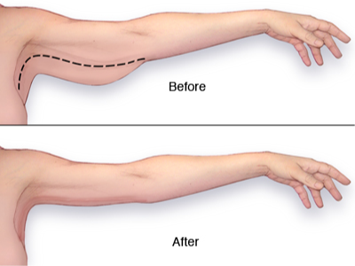
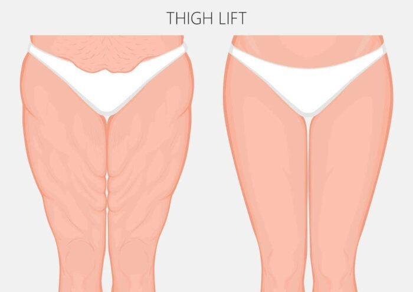
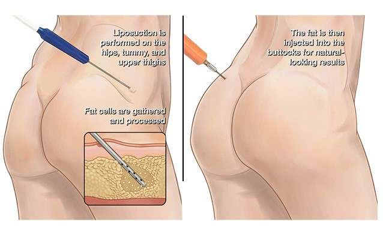

Σώμα
Λιποαναρρόφηση
Τι βελτιώνει: εντοπισμένο λίπος (όχι μέθοδος απώλειας βάρους).
Διαδικασία: κάνουλα μέσω μικρών τομών, τοπική/γενική αναισθησία ανά έκταση. Ελαστική συμπίεση για εβδομάδες.
Κίνδυνοι: εκχυμώσεις, ανωμαλίες επιφάνειας, σπάνια θρομβοεμβολικά.
Εναλλακτικές: συντηρητικές μέθοδοι (κρυολιπόλυση κ.λπ.) με ηπιότερα αποτελέσματα.
Κοιλιοπλαστική
Τι βελτιώνει: περίσσεια δέρματος/χαλάρωση κοιλιάς, διάσταση ορθών κοιλιακών.
Διαδικασία: αφαίρεση δέρματος-λίπους, σύσφιξη μυών όπου ενδείκνυται, γενική αναισθησία. Ανάρρωση σταδιακή σε 4 εβδομάδες.
Κίνδυνοι: ορώματα, ουλές, διαταραχές επούλωσης.
Εναλλακτικές: μίνι κοιλιοπλαστική ή μόνο λιποαναρρόφηση (σε επιλεγμένες περιπτώσεις).

Βραχιονοπλαστική
Τι βελτιώνει: χαλάρωση βραχιόνων.
Διαδικασία: αφαίρεση περίσσειας δέρματος/λίπους, τομές στην έσω επιφάνεια βραχιόνων. Ανάρρωση ~2 εβδομάδες για ήπια δραστηριότητα.
Κίνδυνοι: ουλές, οίδημα, υπαισθησία.
Εναλλακτικές: λιποαναρρόφηση μόνη της (σε ήπια χαλάρωση) ή συνδυαστικά.
Ανόρθωση γλουτών
Τι βελτιώνει: χαλάρωση γλουτών μετά από απώλεια βάρους/ηλικία.
Διαδικασία: εκτομή περίσσειας δέρματος, τομές σε θέσεις που στοχεύουν διακριτικότητα. Ανάρρωση σε 4 εβδομάδες (ειδικό ένδυμα).
Κίνδυνοι: ουλές, συλλογή ορού, διαταραχές επούλωσης.
Εναλλακτικές: μη επεμβατικές θεραπείες με πιο ήπια αποτελέσματα.

Μηροπλαστική
Τι βελτιώνει: χαλάρωση εσωτερικών μηρών.
Διαδικασία: εκτομή περίσσειας δέρματος, τομές ανά περίπτωση. Ανάρρωση σταδιακή.
Κίνδυνοι: ουλές, συλλογή ορού, διαταραχές επούλωσης.
Εναλλακτικές: λιποαναρρόφηση/μη επεμβατικές θεραπείες σε επιλεγμένες περιπτώσεις.

Λιπομεταφορά
Τι βελτιώνει: ήπια αύξηση όγκου και ποιότητας ιστών σε πρόσωπο/σώμα.
Διαδικασία: λήψη, επεξεργασία και έγχυση λίπους. Μέρος του όγκου απορροφάται.
Κίνδυνοι: ασυμμετρίες, απορρόφηση, ασβεστώσεις.
Εναλλακτικές: ένθεμα ή υαλουρονικό (προσωρινό) ανά περιοχή.
Αιδοιοπλαστική
Τι βελτιώνει: υπερτροφία/ασυμμετρία μεγάλων χειλέων, ενόχληση σε ένδυση/άσκηση, αισθητικό προβληματισμό ή πόνο/δυσφορία κατά τη σεξουαλική πράξη.
Διαδικασία: τεχνικές για τη διατήρηση φυσιολογικής ανατομίας, συνήθως τοπική αναισθησία με ή χωρίς μέθη. Επιστροφή σε ήπιες δραστηριότητες σε λίγες ημέρες.
Κίνδυνοι: οίδημα, εκχυμώσεις, δυσφορία, σπάνια διαταραχές επούλωσης/ευαισθησίας ή ασυμμετρία.
Extra πληροφορίες: η απόφαση εξατομικεύεται μετά από κλινική εξέταση.
Φαλλοπλαστική
Τι βελτιώνει: αισθητικές ανησυχίες σχετικά με το μήκος και την περίμετρο του πέους, με στόχο τη βελτίωση της συμμετρίας και της αυτοεικόνας.
Διαδικασία: εξειδικευμένες τεχνικές που μπορεί να περιλαμβάνουν απελευθέρωση συνδέσμων στη βάση και/ή χρήση λιπομεταφοράς για αύξηση περιμέτρου. Η αναισθησία και η διάρκεια εξαρτώνται από την τεχνική που επιλέγεται.
Κίνδυνοι: οίδημα, εκχυμώσεις, ουλές, πιθανή ασυμμετρία ή ανάγκη αναθεώρησης.
Εναλλακτικές: συντηρητικές ή μη επεμβατικές μέθοδοι έχουν περιορισμένα και προσωρινά αποτελέσματα.
Extra πληροφορίες: κατόπιν συζήτησης μπορεί να συνδυαστεί με lifting οσχέου όπου ενδείκνυται.
📌 Το τελικό αποτέλεσμα ποικίλλει ανάλογα με τον οργανισμό.